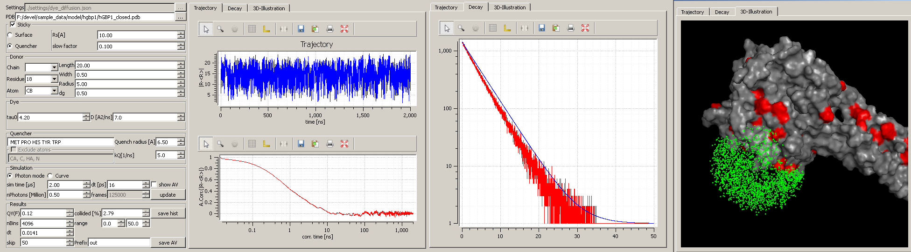
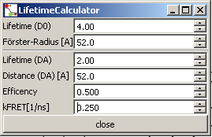
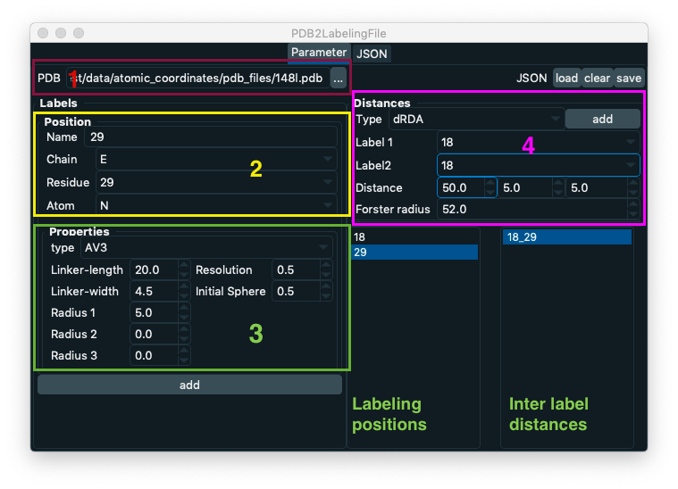
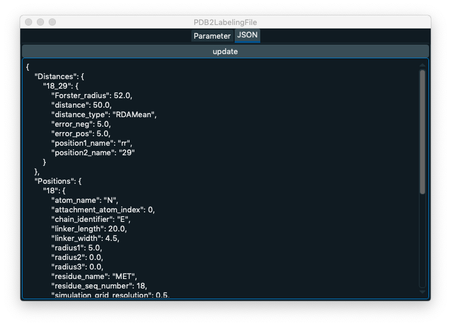
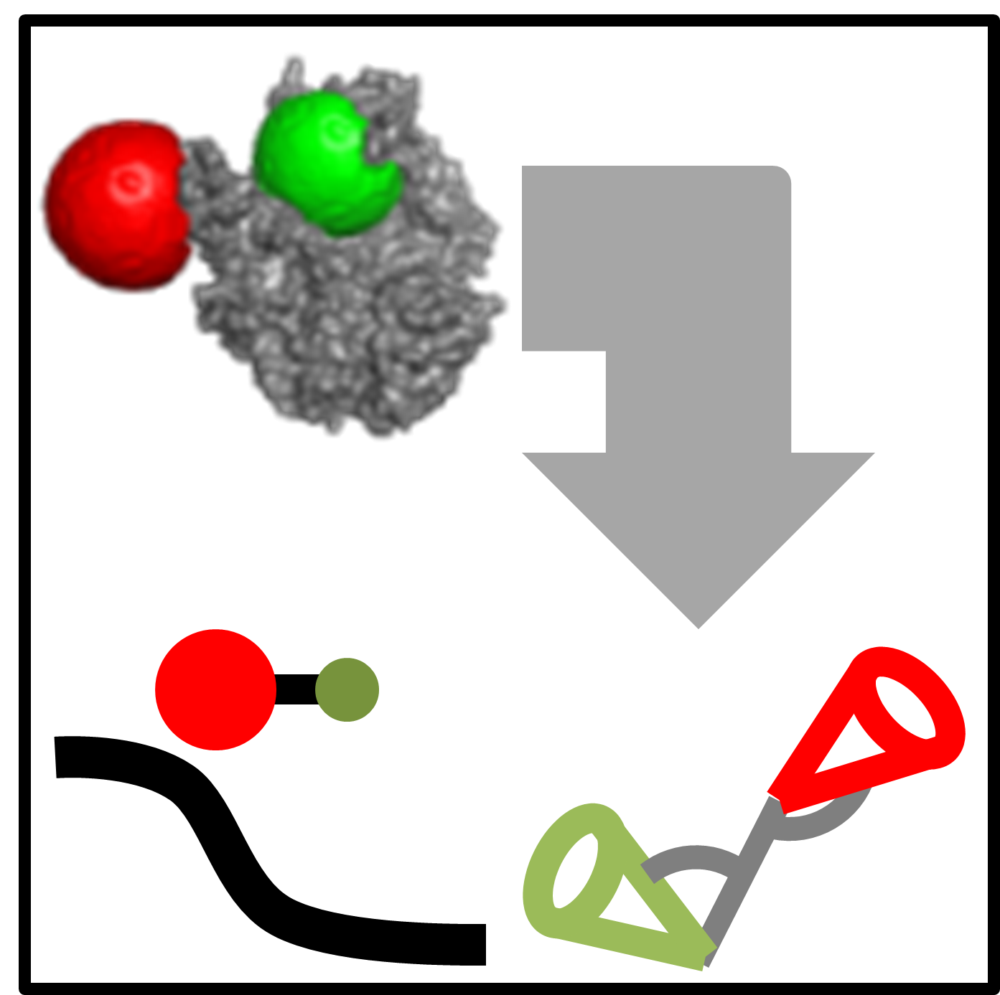

Tools¶
Quenching estimation¶
FRET-lines¶

Transfer-calculator¶
TTTR Converter¶
There are multiple different TTTR (time-tagged time resolved) data file formats that reflect the diversity of TTTR instrumentation
PicoQuant PTU (multiple instruments)
PicoQuant HT3
Becker&Hickl Spc132
Becker&Hickl Spc630-256, Spc-4096
The TTTR converter can be used to convert the different TTTR formats. To convert a set of experimental TTTR files, first select the reading routine that should be used to read the data. Next, drop a set of files to the empty area in the converter window.

Finally, select the ouput file format and click on convert to save the files to a single output file.
TTTR Histogram calculation¶
Kappa2-Distributions¶
LabelStructure¶
The tool LabelStructure can be used to prepare valid JSON files that can be used in FRET screening and FRET restrained modelling. e.g., using the command line program avtraj or Olga.
To generate a JSON file first, open a PDB file in LabelStructure by clicking on the three dots next to the “PDB” label (see figure below, number 1). In the tab “Parameter” the JSON file can be prepared. In the tab “JSON” the generated JSON file can be inspected and edited. Using the buttons “load”, “clear”, and “save” an existing JSON file can be opened, the all current values of the program can be cleared, and a generated JSON file can be saved, respectively.
Next, define a set of labeling positions. For that, first specify a name of the labeling position (the name is an arbitrary string), the chain ID of to which the label is attached to, the residue number of the chain, and the atom name the which the label is attached to. After specifying the labeling position, specify the type of the label. First, specify the type of the simulation that is used to simulate the positional distribution of the label. Here, there are two options. When the option “AV1” is selected the positional distribution of the label is simulated by modeling the sterically allowed conformational space of a sphere that is attached by a flexible linker to the attachment point. When the option “AV3” is selected three radii describing the shape of the label are simulated. Second, define the sizes of the label and the linker attaching the label to the structure by adjusting the parameters Linker-length, Linker-width, Radius 1, Radius 2, and Radius 3. The parameters Radius 2 and Radius 3 can only be adjusted when the simulation option AV3 is used. Finally, click on the button “add labeling position” to add a labeling position. The added labeling position is displayed in a list.
To define a distance between a pair of labeling positions, first select the type of the distance. Currently, there are four options where (1) dRDA is the mean distance between the two labels, (2) dRDAE is mean FRET efficiency represented by a distance, (3) dRMP is the distance between the mean label positions, (4) pRDA is the inter-label distance distribution. Warning: not all options are supported by all software packages using the generated JSON file as an input. After specifying the distance type, select two labeling positions from the dropdown menus “Label 1” and “Label 2”. Next, enter the experimentally determined distance with corresponding errors and specify (if needed) the Forster radius of the labeling pair. Finally, click on “add distance” to add a distance of the distance list.
The JSON file is displayed in the tab “JSON”. The text editor displayed in the JSON tab can be used to edit the JSON file.
When finished editing the file click on “update”. After clicking on “update” the JSON displayed in the text editor is parsed and displayed in the “Parameter” tab.
Filter-Structures¶
Structure2Transfer¶
Structure2Transfer is a small tool that calculates for a given set of PDB-files the distance and the orientation factor kappa2. No fluorophore simulation is performed. Therefore the flurophores have to be part to the analyzed structures. You can access the tool Structure2Transfer as depicted below.

After opening the tool the following window becomes visible. Now first open a PDB-file representative for the whole set. The program does not do any checking if atom numbers within the whole set differ. Therefore make sure all PDB-files are identical except for their coordinates. After opening the “Reference-structure” you will be able to define you Donor and Acceptor fluorophore. The atoms chosen in the “Donor” and “Acceptor” box define the dipole of the donor and the acceptor-fluorophore. If the dipole checkbox is not checked only the first atom in the donor and acceptor definition box will be used to calculate the distances.
If the “Histogram” checkbox is checked histograms of the orientation factor kappa2, the donor- and acceptor distance and the FRET-rate will be plotted after the processing of the PDB-files. After processing of the PDB-files the obtained distances, orientation factors and FRET-rate files can be saved using the “save” button. The distance between the flurophores and the orientation factor is calculated as depicted above.
To calculate the donor-acceptor distance in every structure, on each fluorophore, we chose two Cbeta-atoms on the beta-barrel, so that the connecting vector of the two atoms is a good approximation of the transition dipole. The distance between the middle points of the connecting vectors of the donor and acceptor is taken as the distance between the chromophores, \(R_{DA}\). Table 2 lists out the detailed calculation steps. For every simulated structure, given the D-A distance and the orientation factor the FRET-rate was calculated according to
in which \(\tau_0\) is 2.6ns and the Forster radius, R0, of GFP and mCherry is 52 Ang including \(\kappa^2=2/3\). The steady-state FRET efficiency Ess was determined using .. math:
`{E_{ss}} = {{{k_{FRET}}} \mathord{\left/ {\vphantom {{{k_{FRET}}} {\left( {{k_{FRET}} + {k_0}} \right)}}} \right. \kern-\nulldelimiterspace} {\left( {{k_{FRET}} + {k_0}} \right)}}`.